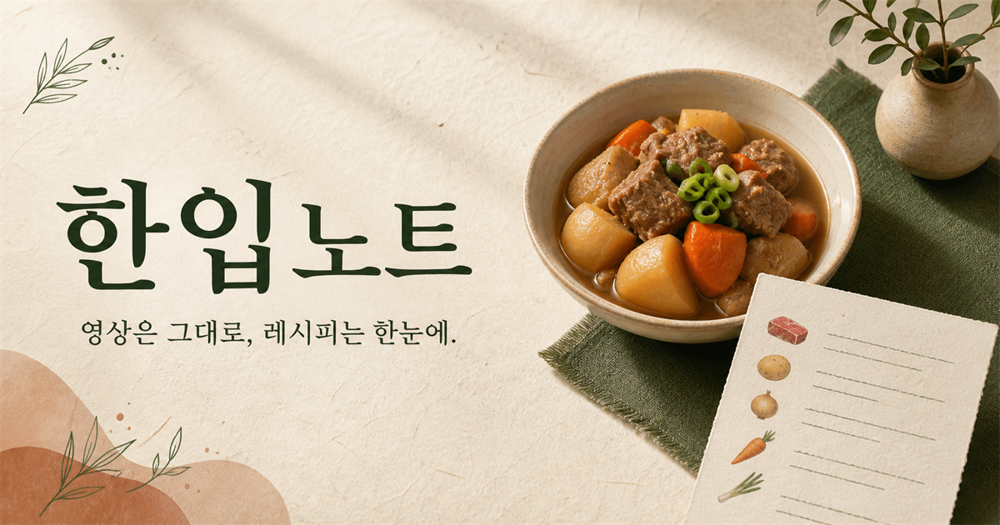

SQLite·Ollama·Qdrant Local 상태 확인 중…
MY KITCHEN ARCHIVE
오늘도 맛있는
한 페이지를 채워요.
영상에서 발견한 레시피를 꺼내 보기 좋게 정리하고,
가진 재료로 다음 요리를 골라보세요.

MY RECIPES
3개의 레시피
최근에 담은 레시피
YOUTUBE TO RECIPE
영상은 그대로,
레시피는 한눈에.
유튜브 주소를 붙여 넣으면 재료와 조리 순서를 한 페이지로 정리해드려요.
자막 또는 레시피 텍스트 직접 붙여넣기자동 추출이 막힐 때 사용하세요
WHAT'S IN MY FRIDGE?
냉장고 속 재료로
오늘 메뉴 찾기.
보유한 재료를 입력하면 저장한 레시피 중 가장 잘 맞는 요리를 추천해드려요.
보유 재료
BEST MATCH